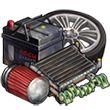
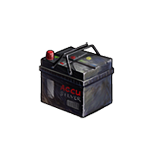
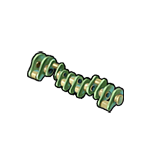
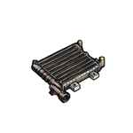
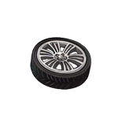
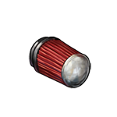

Получено: файл; исходный URL. Иллюстрация «Автомобильная коллекция» из каталога ViveR_9, сопоставлена по точному названию; возможны отличия версий. Оригинальный файл без перекодирования; авторство отдельно не установлено. Страница: источник.
Автомобильная коллекция
ВКонтакте; дата источника не указана- Тип
- Коллекции
- Версия и дата
- ВКонтакте; дата источника не указана
Элементы коллекции





Данные по источнику · ВКонтакте · дата источника не указана
Предварительно: один источник; требует сверки. Требуется сверка.
- Награда
- Шестерня и 8 000 монет
- Где копать
- Глаз-алмаз, нефтяная вышка, особняк, бизнес-центр, машина, мостовая, песок, галька, ограды
- Состав (источник Zombie-island)
- Аккумулятор; Коленвал; Радиатор; Колесо; Фильтр.
- Награда (источник Zombie-island)
- 1 Шестерня; 8000 Монеты.
- Где копать Автомобильную коллекцию в Зомби Ферме лопатами
- Свобода; Цветик; Глаз-алмаз; Останкино; Останкино за монеты; Нефтяная вышка; Флаг Украины; Флаг России; Флаг Зомби Фермы; Машина; Назад в Бездну; Назад в Нижнее днищ; Назад в Копи царя; Назад в каньон Мексиканский; Назад в пещеры ЗУ; Назад в Подножье; Домой; Песок; Камни; Мостовая; Галька; Снежная дорога; Забор раз; Забор два; Ограда раз; Ограда два; Стена раз; Стена два.
- Автомобильная коллеция выпадает из мешков Кладоискателей
- Кладоискател; Кладоискател с мозгами.
- Автомобильная попадается в ценностях
- Простое; Клубничное; Осенний презент с гранатом; Коллекционная посылка; Коллекционный; Коллекционер; Осенний презент 1; Скромный презент; Смелый презент.
- Колдуя Палочками у себя можно найти
- Палочка-выручалочка; Подземный кактус.
- Страница сайта Автомобильная коллекция
- Описание:.


Данные по источнику · ВКонтакте, ZombieS Forever · дата редакции не установлена
Предварительно: Историческая фанатская страница; независимость от других источников не установлена. Возможны различия версий и дат.. Требуется сверка.
- Награда по ZombieS Forever
- Шестерня и 8 000 монет
- Места получения: выборка из источника
- Глаз-алмаз, нефтяная вышка, особняк, флаги, мостовая, песок и др.
Данные по источнику · браузерная версия; платформа в ответе не уточнена · Дата на странице (формат не уточнён): 12/03/2015
Предварительно: Ответ справочного сайта; достоверность и независимость от других фанатских источников не установлены. Возможны различия редакций и версии.. Требуется сверка.
- Ответ источника
- В Зомби Ферма Автомобильная коллекция состоит из радиатора, фильтра, аккумулятора, колеса и коленвала. За сбор этой уникальной коллекции положена одна шестерня и 8000 золотых монет. Составные коллекции могут быть выкопаны лопатами под множеством построек (Свобода, Останкино и т.д), флагами, оградами, стенами, мостовыми и дорогами. Иногда Автомобильная коллекция выпадает из мешков Кладоискателей, реже – после разбития обычного Пасхального яйца.
Данные по источнику · браузерная версия; платформа не указана · дата редакции не установлена
Предварительно: Содержимое списка: изображения и колонки могут терять смысл при извлечении текста; отдельная страница и дата не проверены. Подписи alt иногда ошибочны.. Требуется сверка.
- Текст карточки из каталога
- Шестерня и 8000 монет Аккумулятор Коленвал Радиатор Колесо Фильтр Где копать: Валентинка, Глаз-алмаз, Вождь, Нефтяная вышка, Особняк, Бизнес-Центр, Машина, Мостовая, Песок, Галька
Данные по источнику · Мой Мир (Mail.ru); историческая таблица · дата редакции не установлена
Предварительно: Источник сам использует знаки вопроса; не следует считать такие места подтверждёнными. Возможны изменения патча и платформы; независимость от других справочников не доказана.. Требуется сверка.
- Название в источнике
- Автомобильная коллекция
- Где копать
- Валентинка, Глаз-алмаз, Вождь, Нефтяная вышка, Особняк, Бизнес-Центр, Машина, Мостовая, Песок, Галька
- Награда
- Шестерня и 8000 монет
Данные по источнику · браузерная версия; на сайте указана игра ВКонтакте · дата редакции не установлена
Предварительно: Исторический текст; сильно совпадает со справкой Zommbie.at.ua, независимость не доказана. Отрицания и доступность могут измениться с патчем.. Требуется сверка.
- Где искать по странице «Зомбастики»
- Песок, галька, машина, нефтяная вышка, глаз-алмаз, цветик.
Данные по источнику · историческая браузерная версия, платформа не указана · 10.01.2014 — дата в каталоге; дата редакции материала неизвестна
Предварительно: Фанатский список без вероятностей и уточнения площадки; независимость от других источников не установлена.. Требуется сверка.
- Где искать по списку сайта
- Песок, галька, машина, нефтяная вышка, глаз-алмаз, цветик
- Оговорка
- Список может относиться к разным условиям, инструментам и периодам игры; не доказывает гарантированное выпадение. Заявления «только» и «невозможно» относятся лишь к времени и версии источника.
Данные по источнику · историческая браузерная игра; площадка не уточнена · 25.02.2013 — дата каталога; редакция неизвестна
Предварительно: Проверен текст в каталоге сайта; вероятность выпадения не указана. Исторические версии и даты могут различаться; списки и награды требуют сверки, независимость сайта от других справочников не установлена.. Требуется сверка.
- Награда в источнике
- 1 шестерня и 8000 монет
- Места в источнике
- Валентинка, глаз-алмаз, вождь, нефтяная вышка, особняк, бизнес-центр, машина, мостовая, песок, галька.
Связанные сущности
нет проверенных связей — требуется сверка.
Источники
- прочитано; проверка 2026-11-21
- прочитано: Zombie-island.moy.su; проверка 2026-11-21
- FatalGame: прочитан отдельный ответ; дата на странице 12/03/2015
- ZOMBIA: прочитана карточка в списке
- Ссылка на отдельную страницу; отдельно не проверена
- Zombiemail: строка таблицы коллекций; Мой Мир
- Зомбастики: прочитана соответствующая строка; возможная копия другого справочника
- ViveR_9: изображение в каталоге коллекций; совпадение названия
- zommbie.at.ua: где искать коллекции
- zombi-ferma.ucoz.net: каталог коллекций